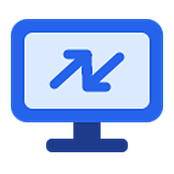

Desliza aquí para mover el ratón · toca para hacer clic · gira el móvil para verlo más grande
Cargando…

Para usar tus equipos desde este navegador necesitas el enlace secreto de tu cuenta.
El enlace es tu llave: guárdalo como un secreto. Solo se guarda en este navegador y nunca se envía a ningún servidor, pero con él y tu contraseña se puede entrar en tus equipos: no lo compartas ni lo dejes en chats o correos.
En el iPhone, si añades RemoteDesk a la pantalla de inicio, la app te pedirá el enlace una vez (no comparte datos con Safari).
Para usarlo a pantalla completa en el iPhone: Compartir → Añadir a pantalla de inicio. La app te pedirá el enlace una vez.
No hay equipos encendidos. Abre RemoteDesk en tu PC y marca Compartir este equipo.
Conectado como .
Desliza aquí para mover el ratón · toca para hacer clic · gira el móvil para verlo más grande